Responsive and validation layer corrected: collapsing application shell, Studio 4 → 2 → 1 columns with detail below, stacked Upcoming rows, multiline composer, no mid-word breaks. Earlier 200% and 320 passes withdrawn. Desktop direction unchanged (pixel diff ≤0.003%). Instrument Sans (variable, OFL) throughout. Rendered in Chrome, macOS, device scale 2. No option is recommended on this board.
| # | Decision | Applied |
|---|---|---|
| B-01 | Approved | Exact trust line “VIDEOGO only publishes within permissions you grant.” under Billing — verified: True |
| B-02 | Approved | Today stays selected on Account (current: Today); Account reached only from the account control |
| B-03 | Approved as a scoped exception | Knowledge: in-card input · Account: no composer · QA-deferred: no composer. Screen-specific, not a universal composer rule |
| B-04 | Approved provisionally | Four-step indicator on the onboarding QA-deferred screen only; not a generic component |
| B-05 | Standardized | Account control is a link on all 8 Checkpoint A and B pages — link True · same size True · same appearance True · same focus ring True · touch ≥44px True |
| B-06 | Approved | Videogo mark identifies Videogo turns with accessible name “Videogo” (2 marks, role img) |
Projected chronology: the eventual newest post top-left; timed Scheduled / Planned by effective publish time; untimed Planned posts listed apart, claiming no position; recent Live posts follow. 3:4 grid preview positioned by title-safe / focal metadata, centre only without metadata; originals unaltered. Nothing Scheduled on the integrated Studio screen (READY conflict).
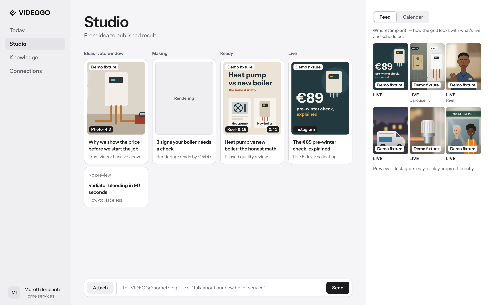
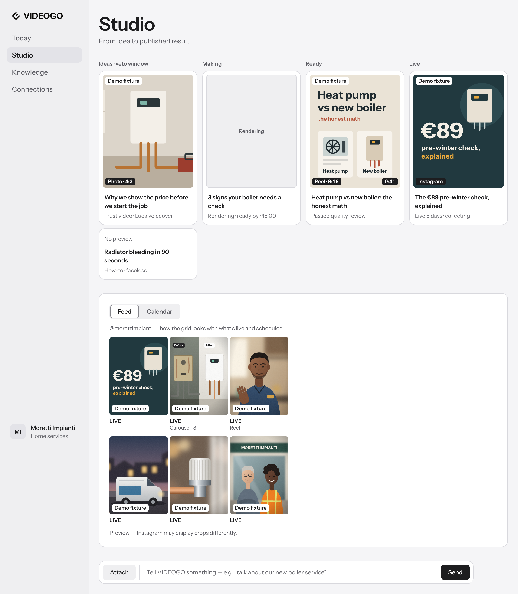
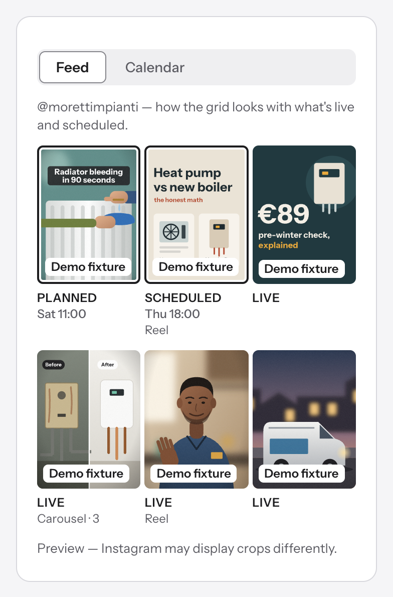
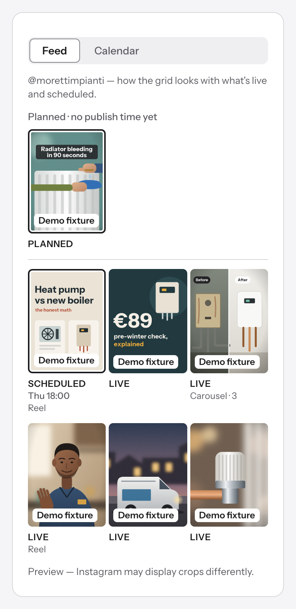
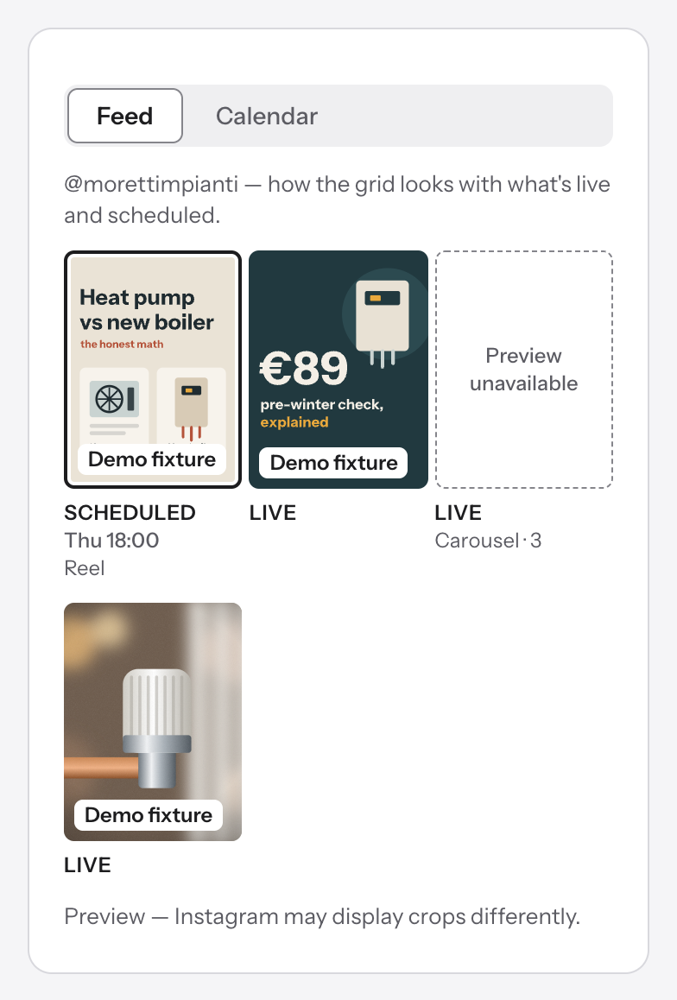
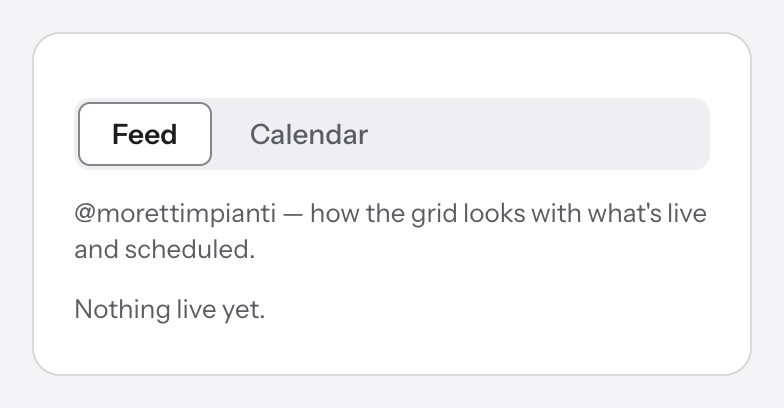
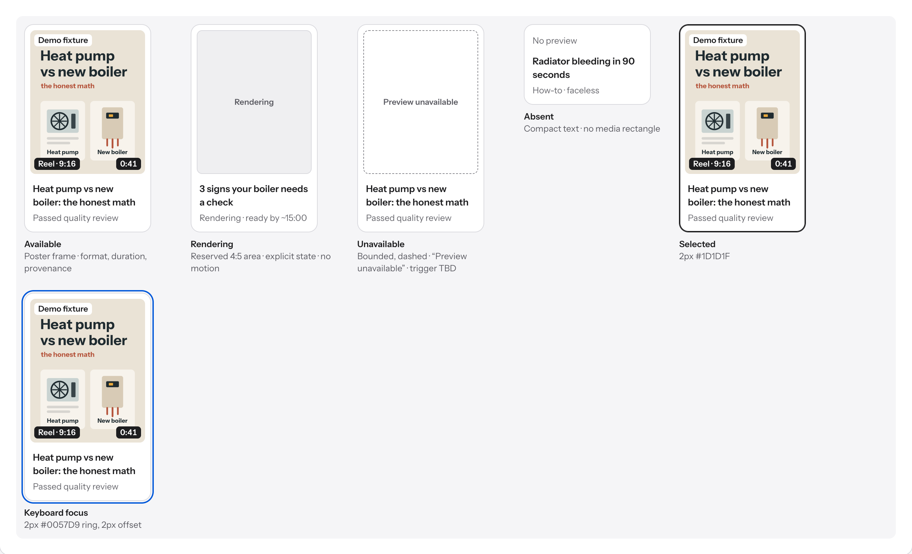
Open, no interaction added: access to the uncropped original for imported posts. Not added: reorder, positioning, Current / After toggle, pinning, tile detail, editing.
200% text = CDP Page.setFontSizes (browser text-size setting ×2). 200% zoom = 720×450 CSS px at device scale 2. 320 = complete product shell, touch. A pass needs: no horizontal scroll, clipping, overlap or mid-word breaks; navigation and account reachable; composer in flow; visible keyboard rings. Detectors verified against known-bad layouts.
| Screen | 1440 | 1216 | 200% text | 200% zoom | 320 shell |
|---|---|---|---|---|---|
| /today.html | pass | pass | pass | pass | pass |
| /today-ready.html | pass | pass | pass | pass | pass |
| /studio.html | pass | pass | pass | pass | pass |
| /studio.html?select=rd1 | pass | pass | pass | pass | pass |
| /knowledge.html | pass | pass | pass | pass | pass |
| /account.html | pass | pass | pass | pass | pass |
| /making.html | pass | pass | pass | pass | pass |
| /week-one.html | pass | pass | pass | pass | pass |
| /first-video-deferred.html | pass | pass | pass | pass | pass |
| Scenario | 1440 | 1216 | 200% text | 200% zoom | 320 shell |
|---|---|---|---|---|---|
| knowledge-long | pass | pass | pass | pass | pass |
| account-long | pass | pass | pass | pass | pass |
| making-long | pass | pass | pass | pass | pass |
| today-upcoming-long | pass | pass | pass | pass | pass |
| studio-detail-long | pass | pass | pass | pass | pass |
| studio-idea-detail-field | pass | pass | pass | pass | pass |
| composer-five-lines | pass · 5 lines + scroll | pass · 5 lines + scroll | pass · 5 lines + scroll | pass · 5 lines + scroll | pass · 5 lines + scroll |
| studio-composer-five-lines | pass · 5 lines + scroll | pass · 5 lines + scroll | pass · 5 lines + scroll | pass · 5 lines + scroll | pass · 5 lines + scroll |
| 1440 | 1216 | 200% text | 200% zoom | 320 shell | |
|---|---|---|---|---|---|
| Shell | rail | rail | menu bar | menu bar | menu bar |
| Studio columns | 4 | 4 | 2 | 2 | 1 |
| Studio detail | beside board | below board | below board | below board | dedicated object view |
| Upcoming rows | tabular | tabular | stacked | tabular | stacked |
| axe (reported separately) | 0 / 0 | — | 0 / 0 | — | 0 / 0 |
| Render | Changed pixels |
|---|---|
| B1_knowledge_1440 | 0% |
| B2_knowledge_1216 | 0% |
| B3_account-settings_1440 | 0.929% |
| B4_account-settings_1216 | 1.108% |
| B5_loading_making_1440 | 0% |
| B6_empty_week-one_1440 | 0% |
| B7_qa-deferred_first-video-deferred_1440 | 0% |
| A21-1_today-ready-media_1440 | 0% |
| A21-3_studio-populated-media_1440 | 0% |
| A21-4_studio-selected-detail_1440 | 0.001% |
| A21-5_studio-selected-detail-below_1216 | 0% |
1440×900 window, browser text size 200%. Rail collapses to the menu bar; Upcoming rows stack; Studio shows two columns with READY detail below; full composer placeholder.
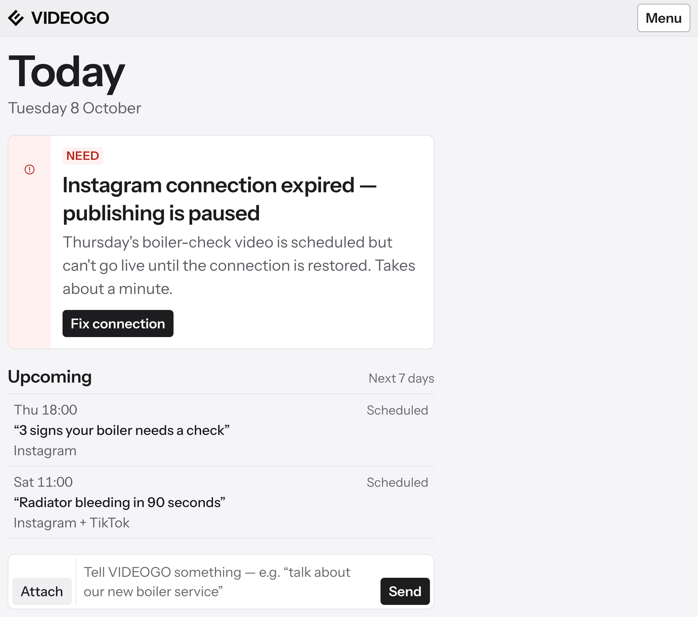
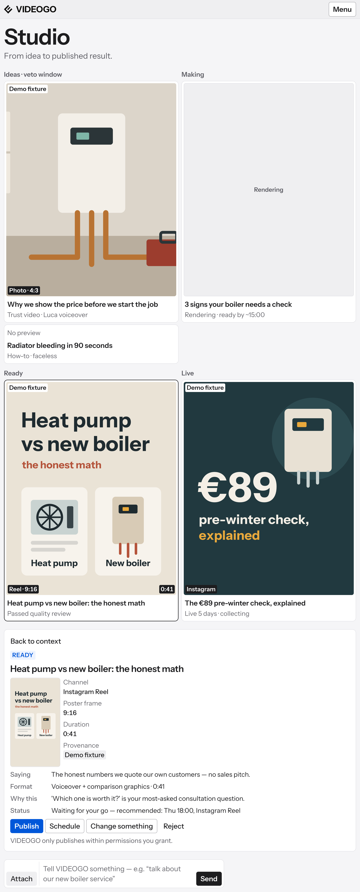
1440×900 window at 200% browser zoom (720 CSS px).
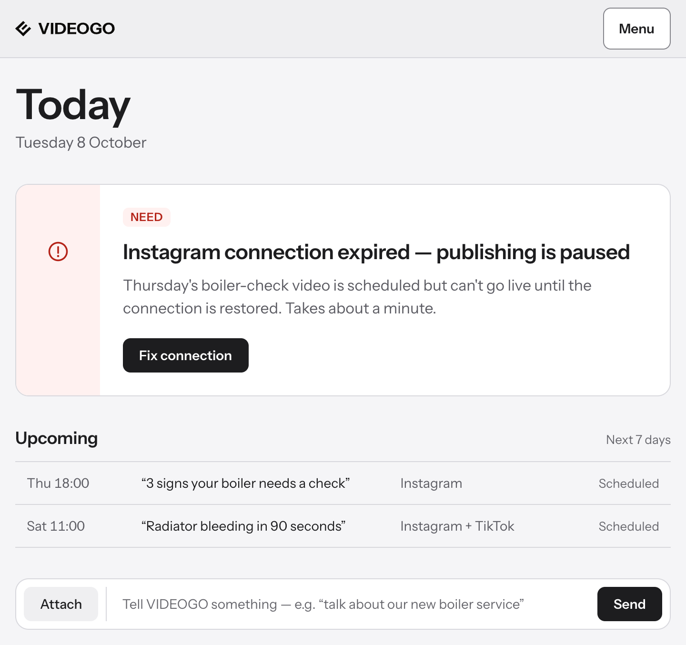
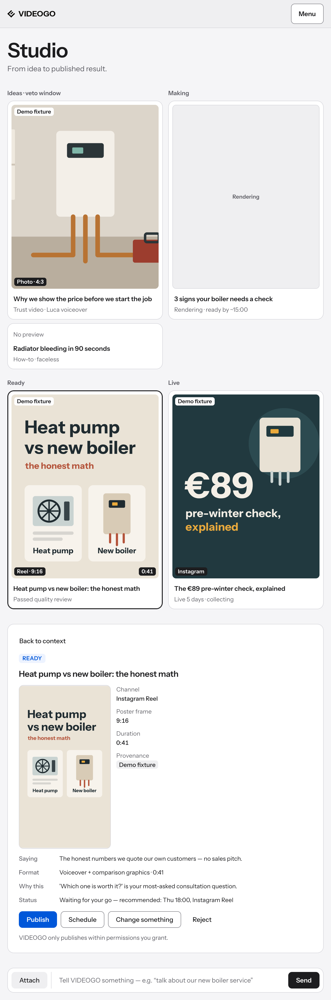
Navigation and account access included. Menu is a disclosure in page flow (Escape closes). Studio: one column with media cards, READY detail below, composer after it.
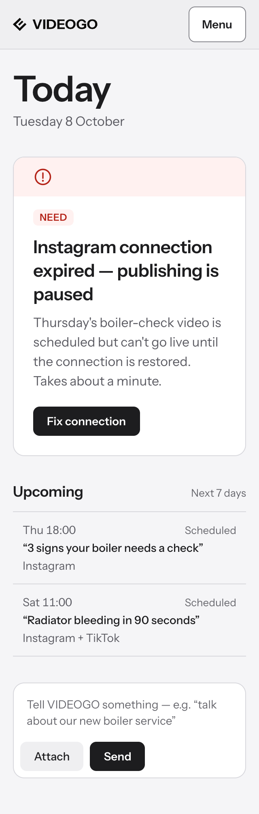
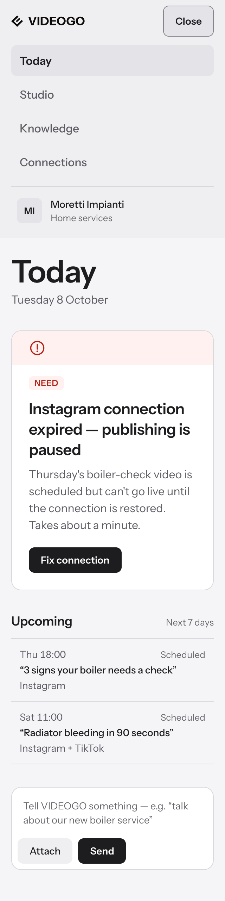
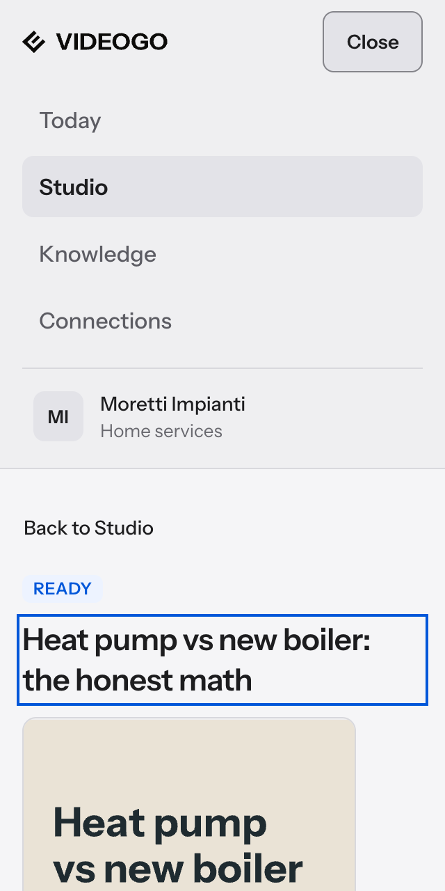
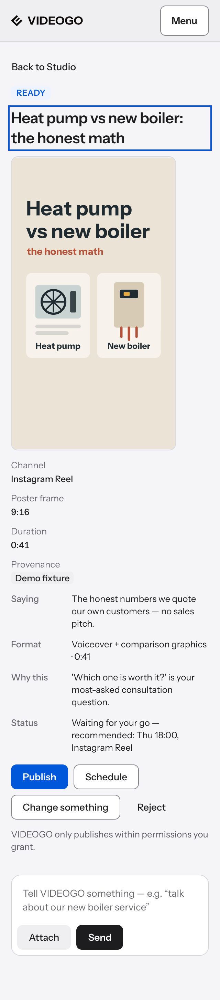
Approved multiline textarea: grows through five whole lines, then scrolls inside. Desktop Enter sends, Shift+Enter inserts a newline; touch Return inserts a newline, Send submits. In flow — never covers content. Send outcome undefined in sources.
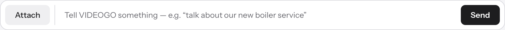
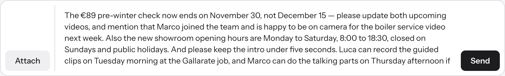
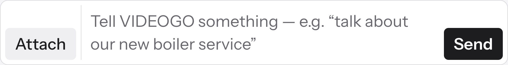
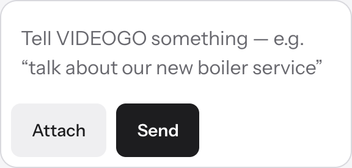
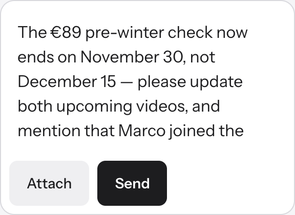
Knowledge · Account / Settings · Making (loading) · Week one (empty) · QA-deferred. Unchanged from the approved direction.
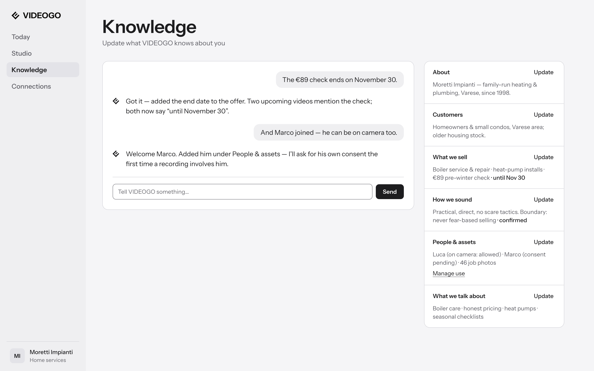
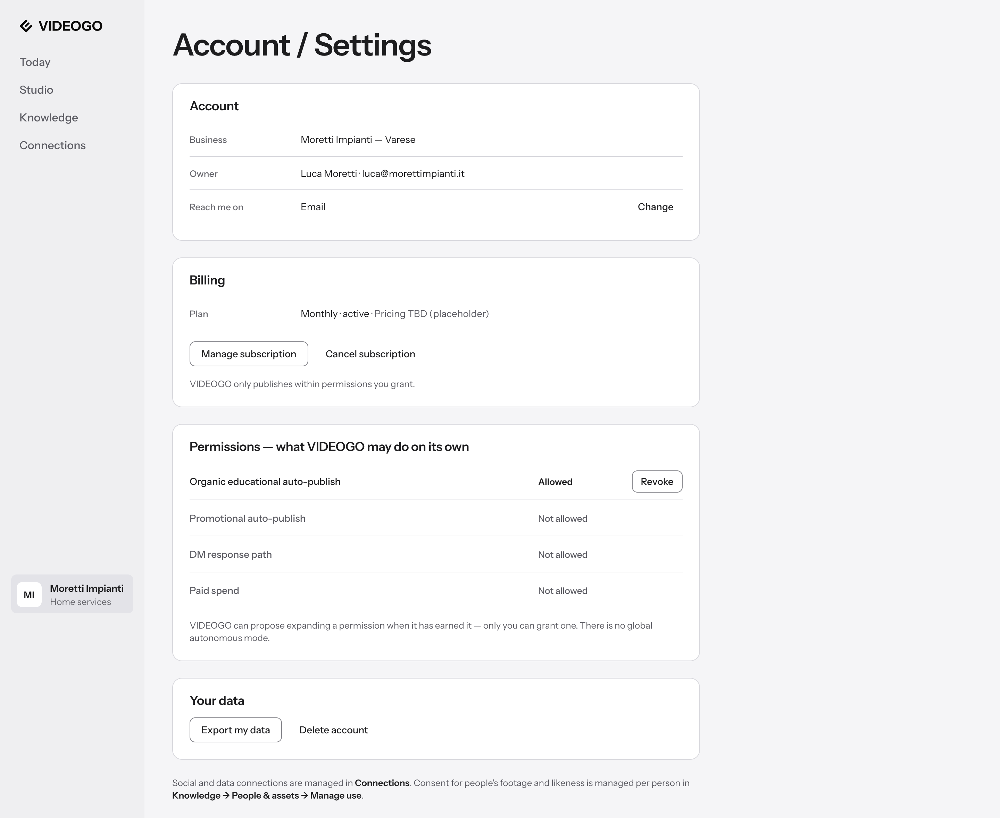
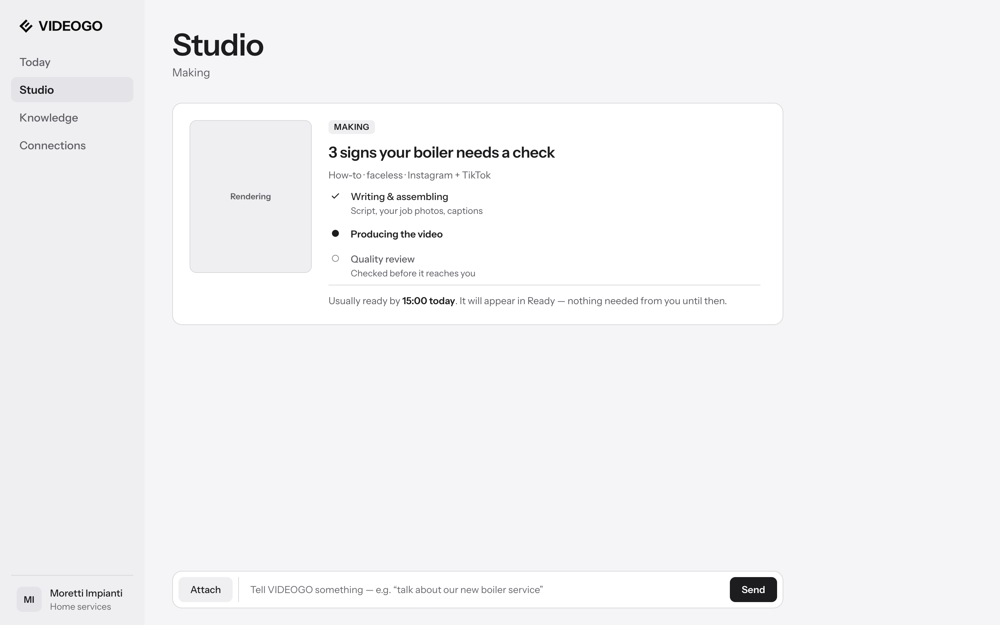
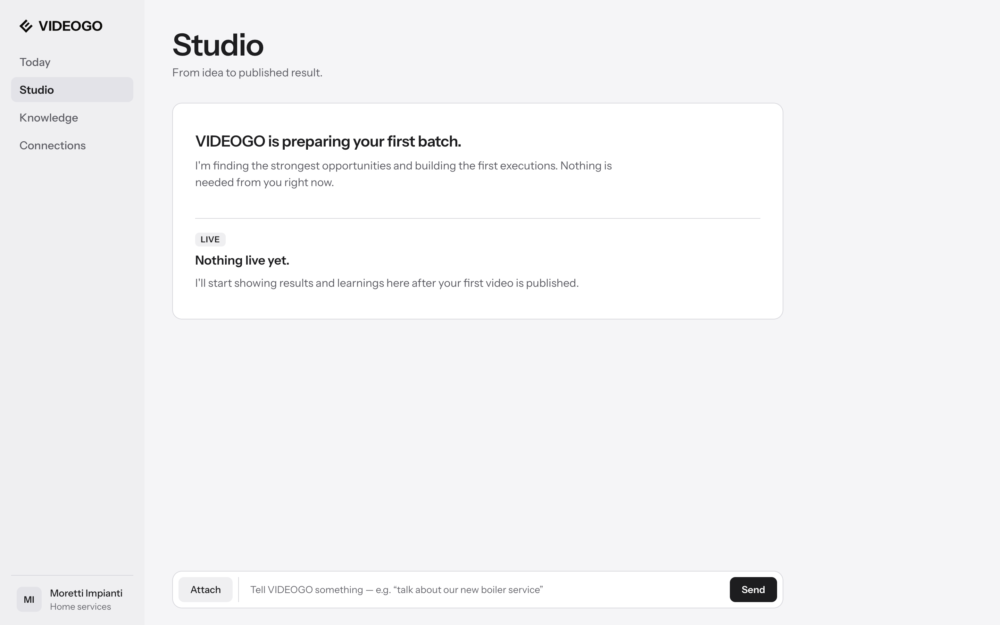
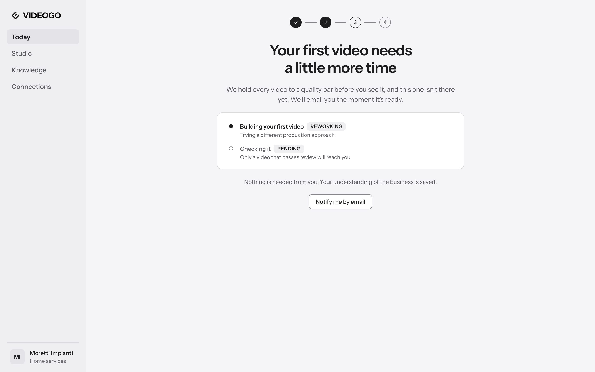